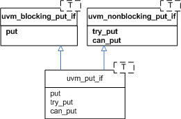
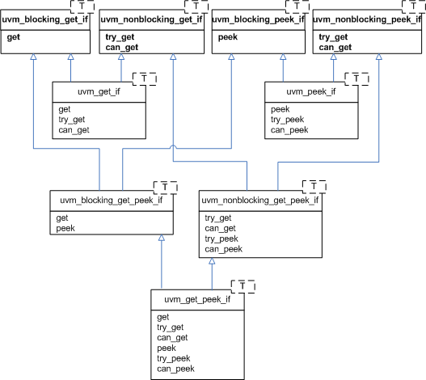
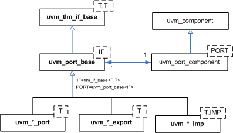
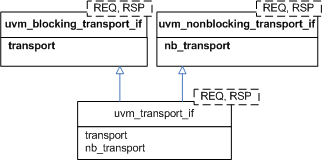
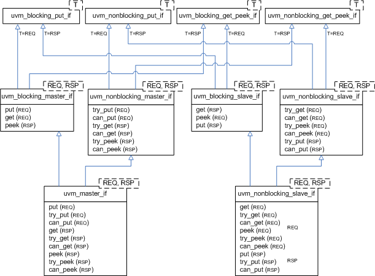
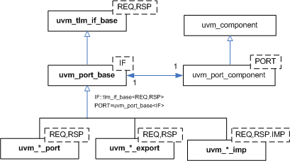
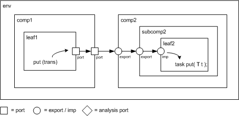

TLM1 Interfaces, Ports, Exports and Transport Interfaces
Each TLM1 interface is either blocking, non-blocking, or a combination of these two.
| blocking | A blocking interface conveys transactions in blocking fashion; its methods do not return until the transaction has been successfully sent or retrieved. Because delivery may consume time to complete, the methods in such an interface are declared as tasks. |
| non-blocking | A non-blocking interface attempts to convey a transaction without consuming simulation time. Its methods are declared as functions. Because delivery may fail (e.g. the target component is busy and can not accept the request), the methods may return with failed status. |
| combination | A combination interface contains both the blocking and non-blocking variants. In SystemC, combination interfaces are defined through multiple inheritance. Because SystemVerilog does not support multiple inheritance, the UVM emulates hierarchical interfaces via a common base class and interface mask. |
Like their SystemC counterparts, the UVM’s TLM port and export implementations allow connections between ports whose interfaces are not an exact match. For example, a uvm_blocking_get_port can be connected to any port, export or imp port that provides at the least an implementation of the blocking_get interface, which includes the uvm_get_* ports and exports, uvm_blocking_get_peek_* ports and exports, and uvm_get_peek_* ports and exports.
The sections below provide and overview of the unidirectional and bidirectional TLM interfaces, ports, and exports.
| TLM1 Interfaces, Ports, Exports and Transport Interfaces | |
| Each TLM1 interface is either blocking, non-blocking, or a combination of these two. | |
| Unidirectional Interfaces & Ports | The unidirectional TLM interfaces consist of blocking, non-blocking, and combined blocking and non-blocking variants of the put, get and peek interfaces, plus a non-blocking analysis interface. |
| Put | The put interfaces are used to send, or put, transactions to other components. |
| Get and Peek | The get interfaces are used to retrieve transactions from other components. |
| Ports, Exports, and Imps | The UVM provides unidirectional ports, exports, and implementation ports for connecting your components via the TLM interfaces. |
| Bidirectional Interfaces & Ports | The bidirectional interfaces consist of blocking, non-blocking, and combined blocking and non-blocking variants of the transport, master, and slave interfaces. |
| Transport | The transport interface sends a request transaction and returns a response transaction in a single task call, thereby enforcing an in-order execution semantic. |
| Master and Slave | The primitive, unidirectional put, get, and peek interfaces are combined to form bidirectional master and slave interfaces. |
| Ports, Exports, and Imps | The UVM provides bidirectional ports, exports, and implementation ports for connecting your components via the TLM interfaces. |
| Usage | This example illustrates basic TLM connectivity using the blocking put interface. |
Unidirectional Interfaces & Ports
The unidirectional TLM interfaces consist of blocking, non-blocking, and combined blocking and non-blocking variants of the put, get and peek interfaces, plus a non-blocking analysis interface.
Put
The put interfaces are used to send, or put, transactions to other components. Successful completion of a put guarantees its delivery, not execution.

Get and Peek
The get interfaces are used to retrieve transactions from other components. The peek interfaces are used for the same purpose, except the retrieved transaction is not consumed; successive calls to peek will return the same object. Combined get_peek interfaces are also defined.

Ports, Exports, and Imps
The UVM provides unidirectional ports, exports, and implementation ports for connecting your components via the TLM interfaces.
| Ports | instantiated in components that require, or use, the associate interface to initiate transaction requests. |
| Exports | instantiated by components that forward an implementation of the methods defined in the associated interface. The implementation is typically provided by an imp port in a child component. |
| Imps | instantiated by components that provide or implement an implementation of the methods defined in the associated interface. |

A summary of port, export, and imp declarations are
class uvm_*_export #(type T=int)
extends uvm_port_base #(tlm_if_base #(T,T));
class uvm_*_port #(type T=int)
extends uvm_port_base #(tlm_if_base #(T,T));
class uvm_*_imp #(type T=int)
extends uvm_port_base #(tlm_if_base #(T,T));where the asterisk can be any of
blocking_put
nonblocking_put
put
blocking_get
nonblocking_get
get
blocking_peek
nonblocking_peek
peek
blocking_get_peek
nonblocking_get_peek
get_peek
analysisBidirectional Interfaces & Ports
The bidirectional interfaces consist of blocking, non-blocking, and combined blocking and non-blocking variants of the transport, master, and slave interfaces.
Bidirectional interfaces involve both a transaction request and response.
Transport
The transport interface sends a request transaction and returns a response transaction in a single task call, thereby enforcing an in-order execution semantic. The request and response transactions can be different types.

Master and Slave
The primitive, unidirectional put, get, and peek interfaces are combined to form bidirectional master and slave interfaces. The master puts requests and gets or peeks responses. The slave gets or peeks requests and puts responses. Because the put and the get come from different function interface methods, the requests and responses are not coupled as they are with the transport interface.

Ports, Exports, and Imps
The UVM provides bidirectional ports, exports, and implementation ports for connecting your components via the TLM interfaces.
| Ports | instantiated in components that require, or use, the associate interface to initiate transaction requests. |
| Exports | instantiated by components that forward an implementation of the methods defined in the associated interface. The implementation is typically provided by an imp port in a child component. |
| Imps | instantiated by components that provide or implement an implementation of the methods defined in the associated interface. |

A summary of port, export, and imp declarations are
class uvm_*_port #(type REQ=int, RSP=int)
extends uvm_port_base #(tlm_if_base #(REQ, RSP));
class uvm_*_export #(type REQ=int, RSP=int)
extends uvm_port_base #(tlm_if_base #(REQ, RSP));
class uvm_*_imp #(type REQ=int, RSP=int)
extends uvm_port_base #(tlm_if_base #(REQ, RSP));where the asterisk can be any of
transport
blocking_transport
nonblocking_transport
blocking_master
nonblocking_master
master
blocking_slave
nonblocking_slave
slaveUsage
This example illustrates basic TLM connectivity using the blocking put interface.

| port-to-port | leaf1’s out port is connected to its parent’s (comp1) out port |
| port-to-export | comp1’s out port is connected to comp2’s in export |
| export-to-export | comp2’s in export is connected to its child’s (subcomp2) in export |
| export-to-imp | subcomp2’s in export is connected leaf2’s in imp port. |
| imp-to-implementation | leaf2’s in imp port is connected to its implementation, leaf2 |
Hierarchical port connections are resolved and optimized just before uvm_component::end_of_elaboration_phase. After optimization, calling any port’s interface method (e.g. leaf1.out.put(trans)) incurs a single hop to get to the implementation (e.g. leaf2’s put task), no matter how far up and down the hierarchy the implementation resides.
`include "uvm_pkg.sv"
import uvm_pkg::*;
class trans extends uvm_transaction;
rand int addr;
rand int data;
rand bit write;
endclass
class leaf1 extends uvm_component;
`uvm_component_utils(leaf1)
uvm_blocking_put_port #(trans) out;
function new(string name, uvm_component parent=null);
super.new(name,parent);
out = new("out",this);
endfunction
virtual task run_phase(uvm_phase phase);
trans t;
phase.raise_objection(this, "prolonging run_phase");
t = new;
t.randomize();
out.put(t);
phase.drop_objection(this, "prolonging run_phase");
endtask
endclass
class comp1 extends uvm_component;
`uvm_component_utils(comp1)
uvm_blocking_put_port #(trans) out;
leaf1 leaf;
function new(string name, uvm_component parent=null);
super.new(name,parent);
endfunction
virtual function void build_phase(uvm_phase phase);
out = new("out",this);
leaf = new("leaf1",this);
endfunction
// connect port to port
virtual function void connect_phase(uvm_phase phase);
leaf.out.connect(out);
endfunction
endclass
class leaf2 extends uvm_component;
`uvm_component_utils(leaf2)
uvm_blocking_put_imp #(trans,leaf2) in;
function new(string name, uvm_component parent=null);
super.new(name,parent);
// connect imp to implementation (this)
in = new("in",this);
endfunction
virtual task put(trans t);
$display("Got trans: addr=%0d, data=%0d, write=%0d",
t.addr, t.data, t.write);
endtask
endclass
class subcomp2 extends uvm_component;
`uvm_component_utils(subcomp2)
uvm_blocking_put_export #(trans) in;
leaf2 leaf;
function new(string name, uvm_component parent=null);
super.new(name,parent);
endfunction
virtual function void build_phase(uvm_phase phase);
in = new("in",this);
leaf = new("leaf2",this);
endfunction
// connect export to imp
virtual function void connect_phase(uvm_phase phase);
in.connect(leaf.in);
endfunction
endclass
class comp2 extends uvm_component;
`uvm_component_utils(comp2)
uvm_blocking_put_export #(trans) in;
subcomp2 subcomp;
function new(string name, uvm_component parent=null);
super.new(name,parent);
endfunction
virtual function void build_phase(uvm_phase phase);
in = new("in",this);
subcomp = new("subcomp2",this);
endfunction
// connect export to export
virtual function void connect_phase(uvm_phase phase);
in.connect(subcomp.in);
endfunction
endclass
class env extends uvm_component;
`uvm_component_utils(comp1)
comp1 comp1_i;
comp2 comp2_i;
function new(string name, uvm_component parent=null);
super.new(name,parent);
endfunction
virtual function void build_phase(uvm_phase phase);
comp1_i = new("comp1",this);
comp2_i = new("comp2",this);
endfunction
// connect port to export
virtual function void connect_phase(uvm_phase phase);
comp1_i.out.connect(comp2_i.in);
endfunction
endclass
module top;
env e = new("env");
initial run_test();
initial #10 uvm_top.stop_request();
endmodule